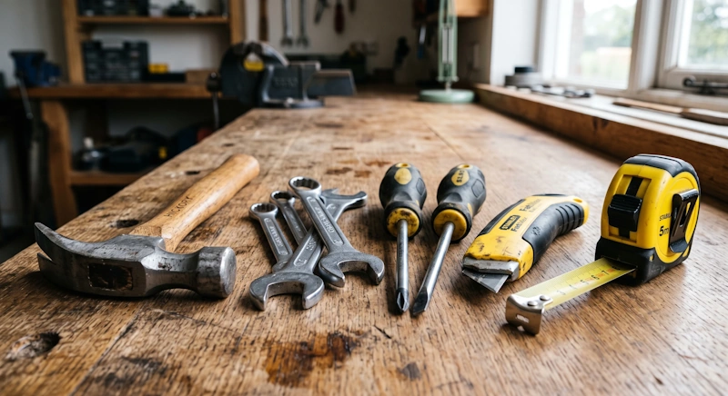
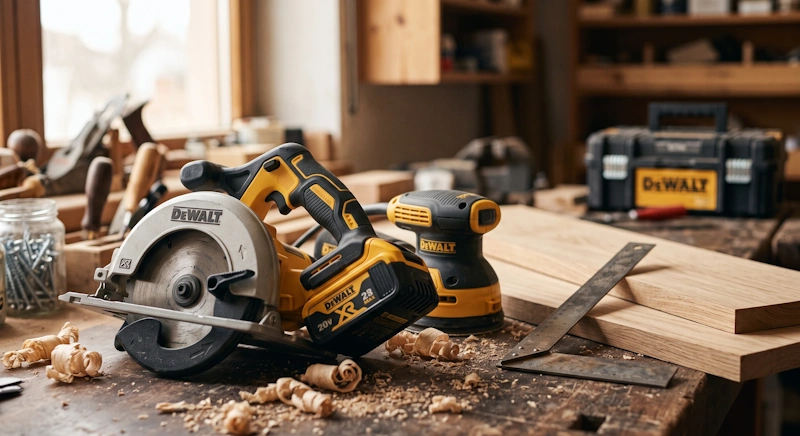
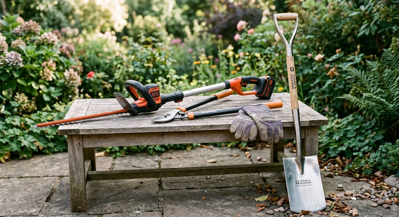
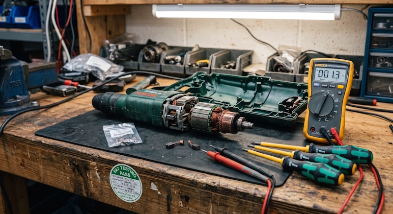
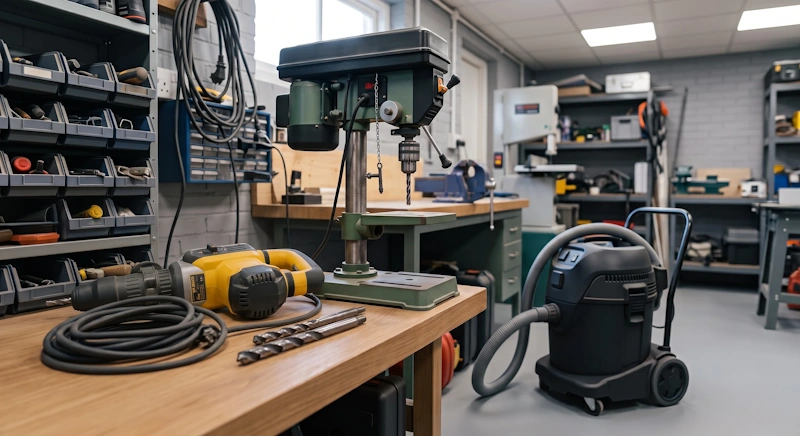
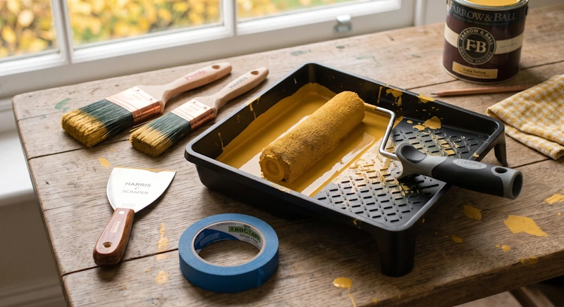
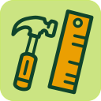
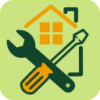
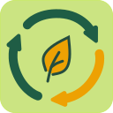
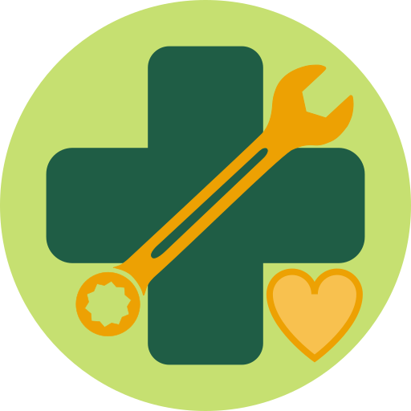

01
Ease the financial burden
Save over £50 per project by borrowing quality equipment. Relieving the financial stress of essential home maintenance helps households breathe easier.
Across Sefton, thousands of power tools sit unused in sheds while DIY home repairs remain expensive. Rent or hire DIY tools from just £12.50 a month and get access to professional, PATPortable Appliance Testing — a safety check every tool goes through before it joins the library (and again regularly after that), so you know it's safe to use.-certified equipment—saving you over £50 per project and cutting landfill waste.
Our founding collection targets 175 tools — SDS drills, circular saws, garden cultivators and more — plus practical hands-on workshops.

Hand tools
Woodworking
Gardening
Repair
Machinery
PaintingAcross Liverpool's L4, L9, L20–L23 catchment area — home to around 93,000 households — many residents store unused power tools while facing the combined pressures of rising living costs and social isolation. We turn underused equipment into a shared community resource that fixes homes and brings people together — practical DIY community support for the whole of Sefton.
Save over £50 per project by borrowing quality equipment. Relieving the financial stress of essential home maintenance helps households breathe easier.
Working with your hands and completing practical projects builds self-reliance and confidence, while our shared hub actively combats loneliness.
Donations, sharing, and repair extend tool lifecycles, supporting a more circular and resilient local economy across L4-L23.
We have one home — St Mary's Complex, 13 Waverley St, Bootle, Liverpool L20 4AP — and it's a short, easy trip away wherever you're starting from across Sefton, whether you're driving or taking public transport.
St Mary's Complex, 13 Waverley St
Bootle, Liverpool L20 4AP
Travel times are approximate and will vary with traffic and timetables. Tap "Get directions" above for live, step-by-step travel from your exact starting point.
Our "Phygital" (physical + digital) service makes the library easy to use from your phone, while keeping the community connection at its centre when you pick up.
Register online or at the local access point and choose your membership.
Search the digital catalogue for the tool that fits your project.
Reserve the equipment and receive booking and return notifications.
Collect, use responsibly, return and help keep the shared toolbox moving.
Opening hours (first 6 months): Wed & Fri 10:00–18:00 · Sat & Sun 09:00–17:00. Days will extend as community demand grows.
Join the community, browse the digital catalogue, reserve what you need and collect your tools from our local Sefton access point.
However you join, your membership falls into one of three categories:
All members also get discounted access to our DIY workshops.
Have good tools sitting unused? Donating helps grow the shared inventory while reducing waste and giving equipment another useful life.
Our DIY workshops in Sefton are a welcoming community space where neighbours connect, share skills, and build confidence. Workshops are £10 per person, with Standard members saving 10%, Supporter members 20%, and Donator members 30% — and our goal is to keep at least half of all events free.

Learn to fix furniture, upgrade your garden, and create useful wooden projects from reclaimed or new materials.

Gain confidence in simple home repairs, practical domestic plumbing, and safe power tool usage.

Workshops focused on waste reduction, combating isolation, and boosting personal wellbeing.
DIY Tools Library CIC is a welcoming space where neighbours connect, share skills, and build confidence. We believe that making and repairing with your own hands does more than just fix homes—it actively improves mental health, combats social isolation, and boosts general happiness. Think of it as DIY for mental health support: practical, hands-on, and open to everyone — our way of offering community wellbeing support across Sefton.

We actively partner with local health providers, housing associations, and charities to deliver measurable social prescribing outcomes.
By engaging vulnerable or isolated residents in therapeutic, practical repair workshops, we create meaningful social connections that improve everyday quality of life.
If you run a local group, school garden, or charity in Sefton, we’d love to partner with you. Whether it's restoring public benches, fixing boundary fences, or setting up raised planter beds, we provide the commercial-grade tools and technical backing. Let's build stronger community spaces together.
Discuss a joint project →We are looking for enthusiastic founding volunteers across Bootle, Litherland, Waterloo, and Crosby to help shape and run our shared lending hub. Age and gender do not matter—just a friendly attitude and a passion for making and repairing!
Apply to volunteer →Everything you need to know before you join — if we've missed something, just ask us.
Yes — you must be at least 18 years old to join DIY Tools Library CIC and borrow tools.
No, we don't require proof of address or ID to sign up. However, you may be asked to provide ID for age verification.
No. With a subscription, members get access to all available tools in our library without a deposit.
You can cancel your subscription at any time through your online account or by emailing us — there's no notice period. If you cancel, your membership stays active until the end of your current billing period, and you won't be charged again.
New members also have a statutory 14-day right to cancel immediately after signing up for a full refund, provided no tools have been borrowed during that time.
Yes. Depending on your subscription tier, there's a limit on how many items you can borrow and how often. The maximum borrowing period is 10 calendar days, after which all borrowed items must be returned (this doesn't apply to any consumables purchased from us). See our membership tiers for the specifics of each level.
Since other members may be waiting for the same tool, late returns may incur a late fee of £2 per item per day, or result in a temporary suspension of your borrowing privileges until the item is returned.
As most tools in our library are second-hand or refurbished, we can't guarantee how they were used before us — so we don't ask members for a deposit or penalty to cover repair costs. We rely on our members to use all borrowed tools appropriately and return them in working order where possible.
Tools are supplied on their own — you'll need to bring your own consumable accessories (drill bits, saw blades, sandpaper, and similar). We do sell some standard consumables on-site if you'd rather not source your own.
Yes. All electrical items are visually inspected and PATPortable Appliance Testing — a safety check every tool goes through before it joins the library (and again regularly after that), so you know it's safe to use. tested for safety before being added to our library and loaned out.
You can collect and return tools at our centre at St Mary's Complex, Bootle during our regular opening hours.
Yes! We gladly accept donations of unwanted tools — we'll clean, refurbish and test them to give them a new life in the community. You'll also get a discount on your membership depending on how many tools you donate. See our donation discounts for details.
We only collect the personal data we need to run your membership and keep you updated — things like your name, email address and borrowing history — and we never sell it to third parties. Under UK GDPR, you have the right to access, correct, or ask us to delete your data at any time, and you can withdraw consent to marketing emails with one click.
For the full details on what we collect, how long we keep it, and how to exercise your rights, see our Privacy Policy, or email us at contact@diytoolslibrary.co.uk.
DIY Tools Library CIC is officially launching in the Sefton area in October 2026. Join the waitlist today to secure your founding membership.
Prefer to talk it through? Call or text 07444 010363, or message us on WhatsApp.